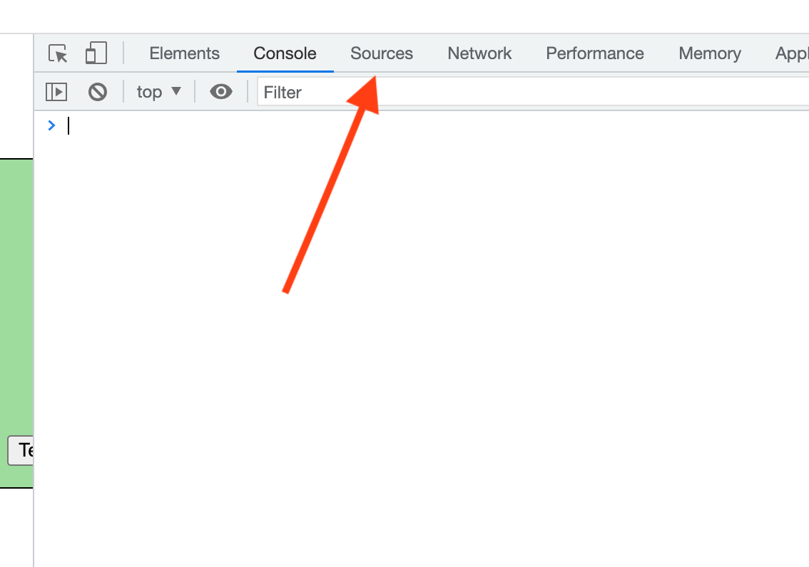
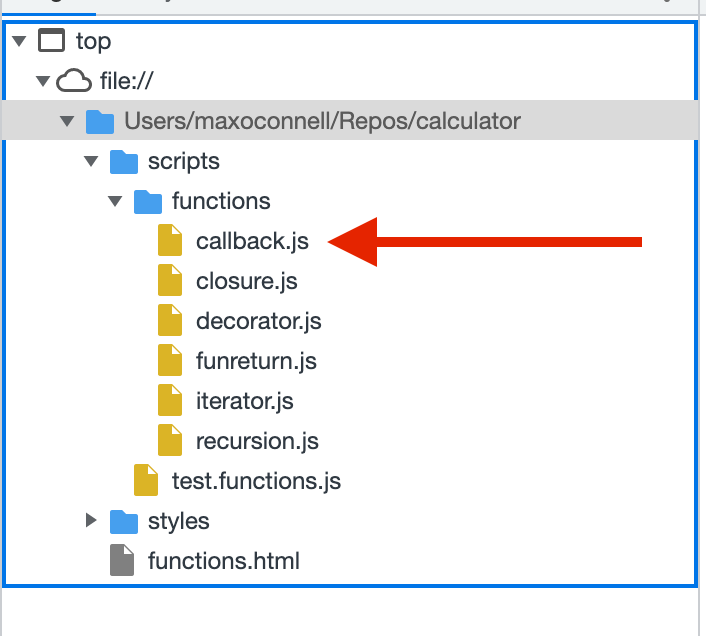
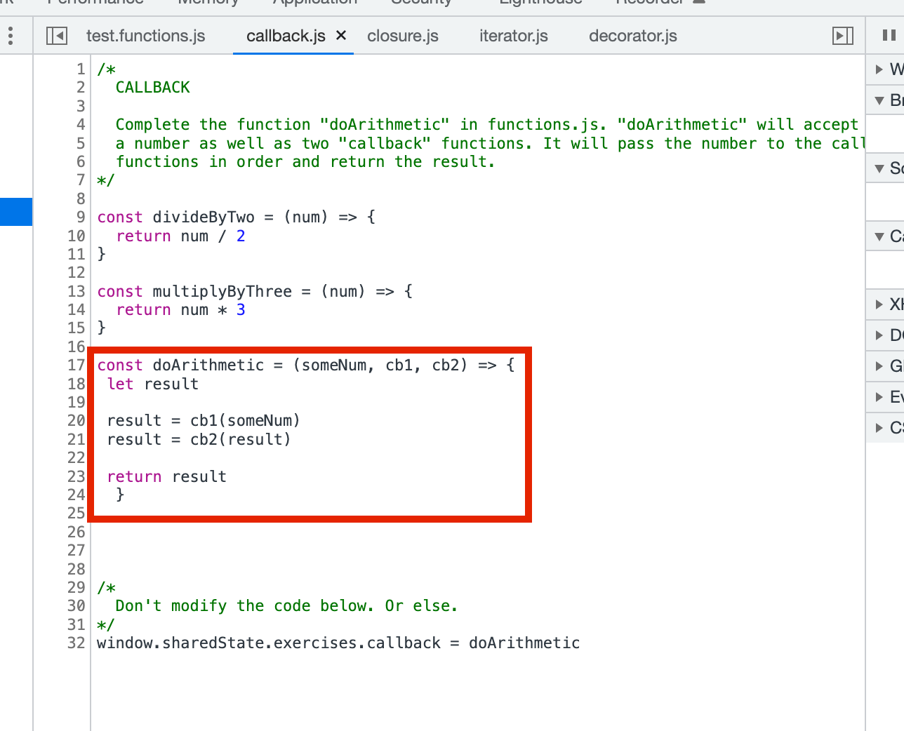

The Chrome browser includes a variety of useful tools. Here now begin to explore them in more detail.
The "debugging" feature is among the most useful features Chrome supports. It allows us to step inside of our code while it runs and see how it behaves. It can show us what values are getting assigned to different variables as well as what functions are being called and in what order.
We'll start by telling the browser to "pause" our code in a specific place. To begin, we have to tell it WHERE to pause.
First, open up your old "functions.js" exercises. Then open the browser console with option + command + j. At the top of the screen you'll see a tab labeled "sources". Click it.
Look at the section on the left. Look at the files and folders listed there. You're looking at a breakdown of all the different js/css/html functions.html explicitly includes.


Now, navigate to your solution for the exercise on "callback". You chould be looking at your code for "doArithmetic".
 To set a "breakpoint" (the flag we're setting to "pause" the code) in chrome we click the line on the numbers on the left side. Select any line INSIDE of "doArithmetic" and set a "breakpoint" there.

Now, click the "test code" button for the callback section. This will run "doArithmetic". You'll see the following:
There's a lot of information here. We'll start from the top. We'll start with the controls that allow the debugger to walk through your code. (These aren't in order.)
- "Continue" - This button tells the debugger to return to running code "normally". You may notice that if you press it, you suddenly find the debugger will re-open again in the exact same spot. This happens because the "breakpoint" is getting reached more than once: every time your function is called it will be hit.
- "Step" - This allows us to walk through the our code step-by-step. Using this button, we're following code exactly as it runs.
- "Step Out" - You'll understand what this does better once you have an understanding of what a "call stack" is. The short version: it pops the debugger out into the function that called the current one. In this case, the test file I created is the one calling your "doArithmetic" function. If you hit this button that's where you'll end up.
- "Step In" - Opposite of the above.
- "Step Over" - Functionally this is very similar to "step" with one caveat: it won't dive into functions as they're called. (Try this with cb1 & cb2 to see what I mean.)
The next feature we'll take a look at is "Watch" or "Watch Variable". This feature is actually fairly simple: all it does is help us keep track of specific variables as we're debugging the system. Using it is simple: give it the name of a variable, and it will display the value of any variables with that name that exists in the currenct context. Click the "+" symbol, enter a variable name (for example "someNum" or "result") and hit enter.
Exercise: